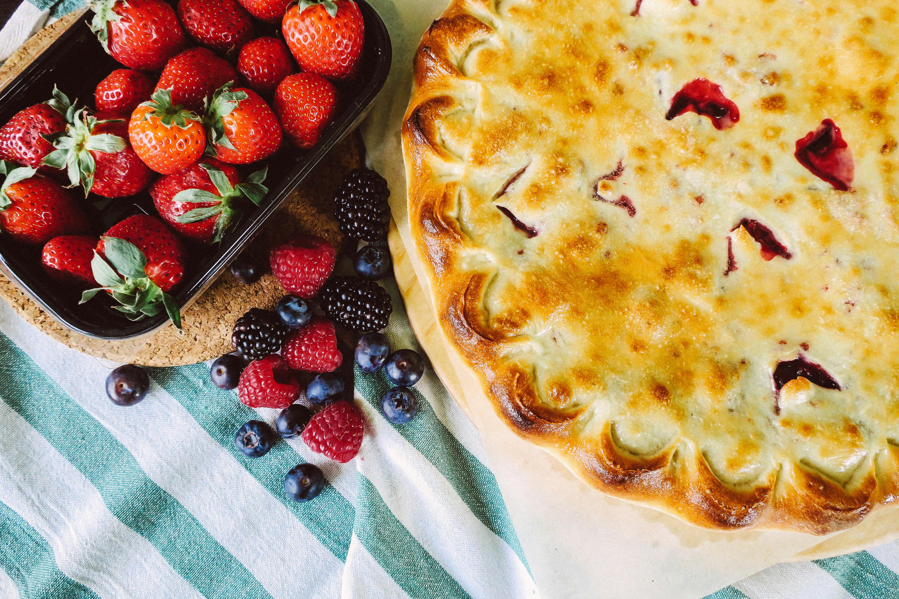

Strawberry Pop Tart Pie

Description
Strawberry Pop-Tart Pie is a playful, oversized take on the beloved toaster pastry made famous by Pop-Tarts. Inspired by the classic frosted strawberry flavor, this dessert transforms a childhood favorite into a shareable pie bursting with sweet strawberry filling and wrapped in a flaky, golden crust. Topped with a smooth vanilla glaze and colorful sprinkles, it captures the nostalgic charm of the original treat while adding the homemade comfort of a freshly baked pie. Perfect for parties, celebrations, or simply satisfying a sweet craving, Strawberry Pop-Tart Pie brings fun and flavor together in every slice.
Ingredients
- 2 ½ cups all-purpose flour
- 1 cup (2 sticks) cold unsalted butter, cubed
- 1 tablespoon granulated sugar
- ½ teaspoon salt
- 6–8 tablespoons ice water
- 1 ½ cups strawberry jam or preserves
- 1 cup fresh strawberries, finely chopped (optional for extra texture)
- 1 tablespoon cornstarch
- 1 tablespoon lemon juice
- 1 cup powdered sugar
- 2–3 tablespoons milk
- ½ teaspoon vanilla extract
- Toppings:Rainbow sprinkles
Instructions for Strawberry Pop-Tart Pie
- In a large bowl, mix flour, sugar, and salt. Cut in the cold butter until the mixture resembles coarse crumbs. Gradually add ice water, one tablespoon at a time, mixing just until the dough comes together. Divide into two discs, wrap in plastic wrap, and chill for at least 30 minutes.
- Preheat your oven to 375°F (190°C). Lightly grease or line a baking sheet with parchment paper.
- In a bowl, combine strawberry jam, chopped fresh strawberries (if using), cornstarch, and lemon juice. Stir until well blended.
- On a floured surface, roll out one dough disc into a large rectangle (about 9x13 inches) and place it onto the prepared baking sheet. Spread the strawberry filling evenly over the dough, leaving about a 1-inch border around the edges.
- Roll out the second dough disc into a similar-sized rectangle. Carefully place it over the filling. Press the edges together and crimp with a fork to seal. Trim excess dough if needed.
- Poke small holes in the top crust with a fork to allow steam to escape. Bake for 30–35 minutes, or until golden brown. Remove from the oven and allow to cool completely.
- In a small bowl, whisk together powdered sugar, milk, and vanilla extract until smooth and thick but spreadable.
- Once the pie is fully cooled, spread the glaze evenly over the top. Immediately add rainbow sprinkles before the glaze sets.
- Let the glaze set for about 10–15 minutes before slicing. Serve and enjoy your nostalgic, shareable Strawberry Pop-Tart Pie!
Home